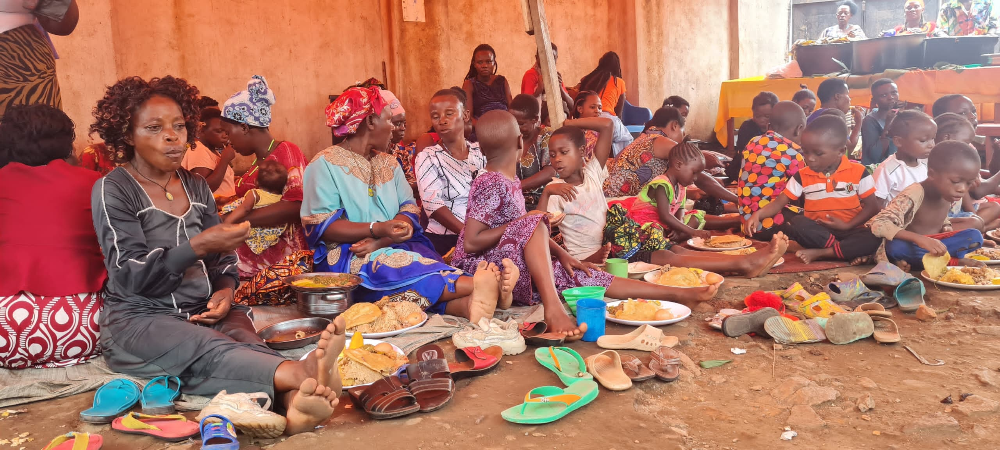
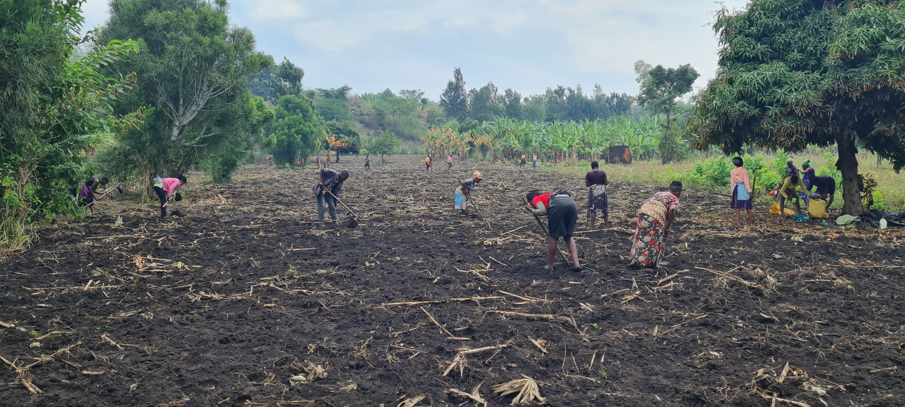

Save Souls
Film Industry
Film Industry
A FAPCAN Initiative · Kidodo, Uganda
At FAPCAN, we use film as a powerful tool for healing, expression, and transformation. Through Save Souls Film Industry, we engage young people and community members in acting, storytelling, and film production — giving them a voice to tell their own stories.
Many of the individuals we work with come from difficult backgrounds, including street life, broken homes, and trauma. Film provides a safe space where they can express emotions, rebuild confidence, and rediscover purpose.
Instead of being defined by their past, they become storytellers, actors, and creators.
2012
Programme launched
10+
Films completed
∞
Stories to tell



